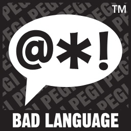
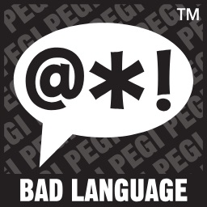
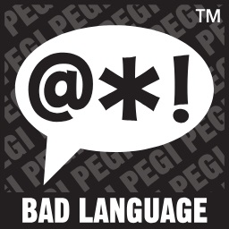

Europa Universalis IV

PLATFORMY
PC
------
------
------

Czwarta odsłona cieszącego się dużą popularnością cyklu gier strategicznych Europa Universalis. Tytuł wyprodukowany został przez ekipę deweloperską Paradox Development Studio. Na przestrzeni kilkunastu lat seria Europa Universalis doczekała się wiernego grona entuzjastów i jednocześnie miana jednej z najważniejszych w gatunku komputerowych strategii.
Ekipa deweloperska firmy Paradox Interactive długo, bo ponad sześć lat kazała czekać na czwartą odsłonę (trzecia część ukazała się na początku 2007 roku), starając się, by trafiła ona w gusta fanów. Wzorem wcześniejszych odsłon cyklu, w Europa Universalis IV gracz wciela się w rolę szarej eminencji, która kieruje rozwojem wybranego kraju na przestrzeni wieków. Tym razem do wyboru jest ponad 250 nacji zamieszkujących praktycznie cały glob. Zależnie od scenariusza długość historycznego okresu gry może wynosić nawet blisko 400 lat (w kampanii głównej).
Zadanie jest o tyle skomplikowane, że w rękach gracza znajduje się całe spektrum spraw związanych z rządzeniem – począwszy od ustroju, poprzez politykę zagraniczną, handel, gospodarkę i strukturę społeczną, a na badaniach naukowych, wojskowości, działaniach militarnych, eksploracji świata i kolonizacji nowych terytoriów skończywszy. W Europa Universalis IV deweloperzy zdecydowali się wzbogacić dobrze znaną fanom mechanikę o nowe elementy. Jedną ze znaczących innowacji stanowi system Monarch Power, w którym osobowość władcy wpływa na możliwość podejmowania działań (przykładowo monarcha o wojowniczym usposobieniu będzie szybciej rozwijał technologie militarne). Spore zmiany wprowadzono również w sferze dyplomacji i handlu.
Twórcy gry postarali się o solidne fundamenty historyczne. W EU IV pojawia się 4 tys. nazwisk przywódców państw i cała plejada innych postaci znanych z kart podręczników do historii. Zadbano również o zaakcentowanie najważniejszych wydarzeń w dziejach, które nierzadko mają wpływ na rozgrywkę. Gra oferuje kilka trybów rozgrywki, zarówno dla pojedynczego gracza jak i do zabawy wieloosobowej za pośrednictwem Internetu. W zmaganiach multiplayer uczestniczyć mogą maksymalnie 32 osoby. Zależnie od wybranej opcji możliwa jest kooperacja lub rywalizacja.
WYMAGANIA
Minimalne:
Nie ma informacji.
Rekomendowane:
Pentium IV 2.4 GHz, 2 GB RAM, karta grafiki 512 MB (GeForce 8800 GT lub lepsza), 2 GB HDD, Windows XP/Vista/7/8, łacze internetowe
Pentium IV 2.4 GHz, 2 GB RAM, karta grafiki 512 MB (GeForce 8800 GT lub lepsza), 2 GB HDD, Windows XP/Vista/7/8, łacze internetowe
Minimalne:
Nie ma informacji.
PEGI
 



Język Gry
EN napisy i dialogi